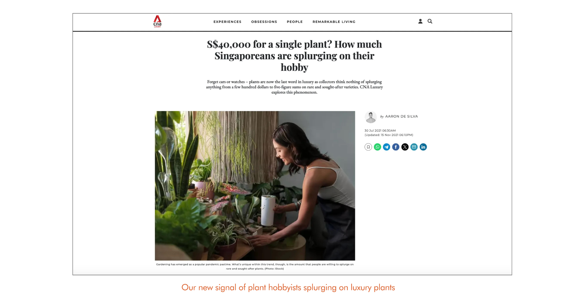
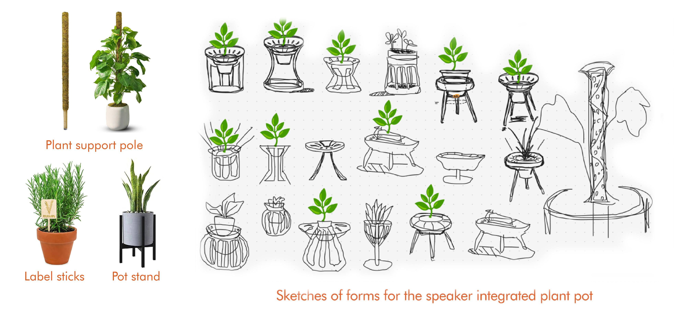
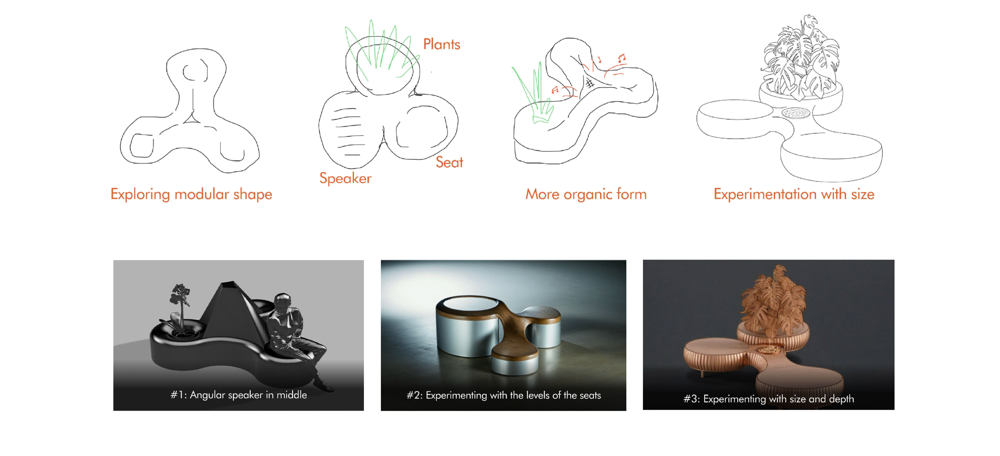
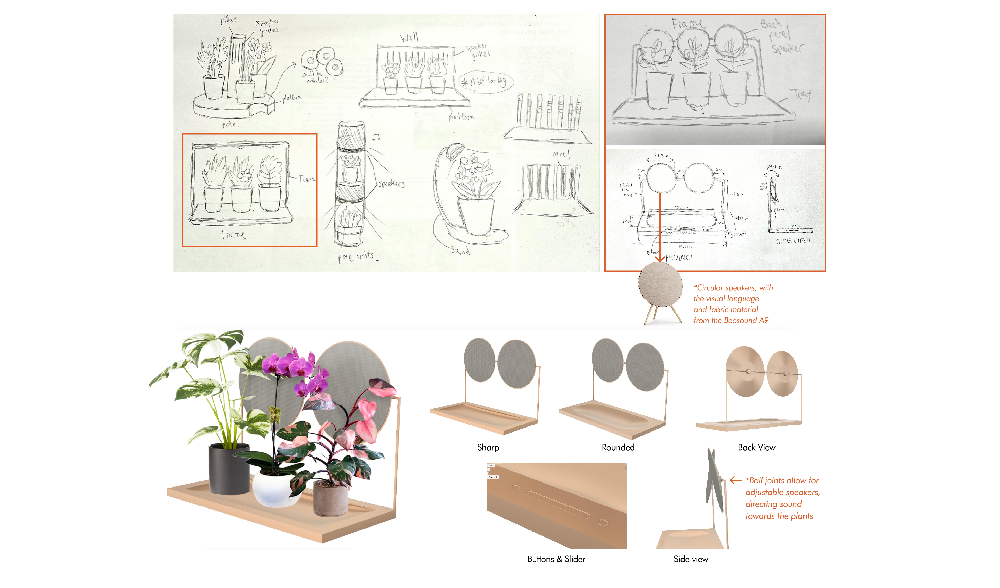
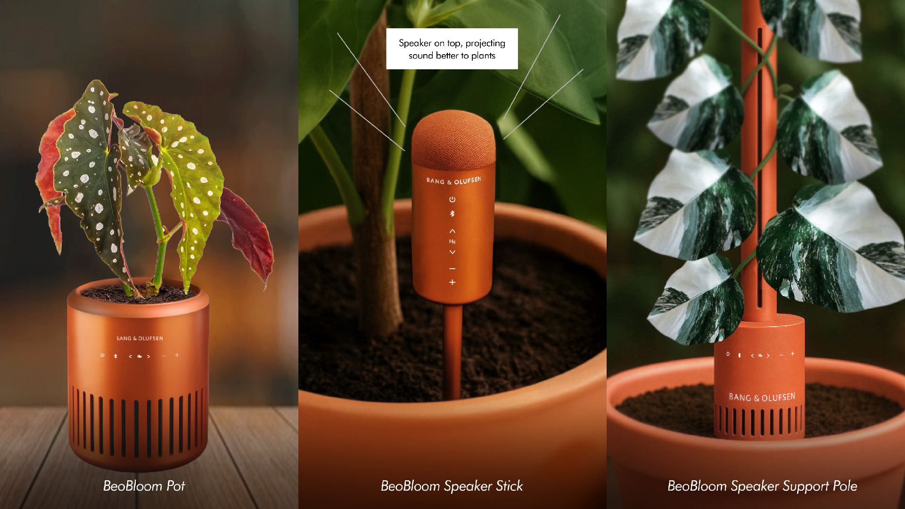

BeoBloom: Bang & Olufsen
Product Design, Design Research
School Project • 2025
Client: Bang & Olufsen
Project Brief
Bang & Olufsen is a luxury audio brand that has been around for over 90 years. They are known for their high-end audio products and have a strong focus on design and craftsmanship. For this collaborative project, we worked with B&O to explore new concepts for the future of the company.
Under the guidance of
Patrick Chia & Alex Arguelles
Timeline:
• 11 Weeks
Collaborators:
• Hirari Haniuda
My Contributions:
• Design Research
• Concept
Development
• Product Designing
(3D modelling &
rendering)
"How might we enhance the wellbeing of both plants and humans through immersive audio in a shared space?"
This project explores how sound can support both plant growth and human well-being. Noting that many plant enthusiasts invest heavily in rare plants and the environments they live in, we investigated how sound, backed by scientific research, can play a role in nurturing them. By identifying an overlap between plant collectors and luxury audio users, we propose a concept that uses immersive sound to create shared spaces of care, benefiting both plants and their caretakers.
The Process was divided into 3 Phases:
1. Signal Scanning
2. Conceptualising

3. Form-Finding

Phase 1: Signal Scanning
Crafting a Timeline
Firstly, we sought to understand more about the B&O as a brand
through secondary research and how they evolved throughout the
years. Competitor brands and their products were also analysed.
Mainly, we found that:
Economic conditions could influence consumer
attitudes and in turn, streamlining the target audience since B&O is
a luxury brand.
Trends fuel innovations For instance, Bluetooth spurred the
"wireless" movement in the 2010s, reshaping product design and user
experience across brands. More recently, the sustainability trend
has shifted consumer spending towards eco-friendly choices.
Signal Scanning
Future opportunities were explored by analysing news articles and brands, organising findings into Current (B&O-aligned), Rising (emerging), and Fringe (innovative) relevance levels.
Shortlisting Signal for further development
We arrived at three ideas including: Enhancing user experience with smell technology, plants responding to sound and audio as a fashion statement. We futher refined them to determine their potential before shortlisting the idea of audio-responsive plants to develop further.
Phase 2: Conceptualising
Reframing the idea: Audio's influence on plants
We continued scanning for more signals regarding this topic, considering possibilities in contexts such as healing gardens in hospitals or sustainable green buildings. Initial research on sound frequencies' impact on plants were also conducted, based on the pseudoscience that music promotes plant growth.
"Beyond human wellness, could sound also offer benefits to plants?"
While initially considering the product's role in user wellness, we broadened our scope to include plants. This highlights audio's positive impact on plant well-being and their interconnectedness, informing our conceptual approach and the discovery of relevant references at an experiential and product level.

"How might we integrate B&O (audio) and plants to enhance wellness?"
We zoomed in on these two references: a sculptural approach, and a more functional approach featuring a single house plant. The bonsai idea then led us to consider plant types associated with a more luxurious demographic.
Arriving at our new Signal: Plant Hobbyists spending big sums on luxury plants
Exploring plant types, we shifted our focus to users and identified a demographic of enthusiasts willing to invest in rare collections. This niche seemed relevant, aligning with the functional approach where audio serves as a nurturing tool, and it matches B&O's identity as a lifestyle brand.

Crafting User Experience & Product Narrative
Referencing this signal, we crafted our initial narrative and user
journey relating to the product. (note: Was updated hand-in-hand
while conceptualising form).
Inspired by nature and Scandinavian design, the
integrated speaker enhances both the visual and sensory appeal of a
living space.
Tactile controls on product for fine-tuning sound frequencies
and environmental settings to support plant growth.
Customisability through app
allows users to personalise their experience, including sound
frequency selection.

Technical Research on sound frequencies' influence on plants
Data from academic papers and articles were gathered to understand the effect of different sound frequencies on different species of plants to substantiate our concept to ensure it's feasible scientifically. This research was also used to inform the technical specifications of the product later on.

Phase 3: Form-Finding
Exploring different types of plant attachments
Additionally, we explored various plant attachments, seeking opportunities to create a product that could be seamlessly integrated with the plant. This exploration led us to consider elements such as supports and labels that could be inserted into the soil, allowing for both functional and aesthetic integration.
Plant Pot Stands:
Modular seating sculpture:

Check-in Gallery Walk with B&O client
During our initial check-in with B&O, we presented our progress and received feedback. The modular seating sculpture was deemed too large and not aligned with B&O's aesthetic, feeling more business-oriented. For our concept, we received positive feedback and were encouraged to look into it further, and to experiment with more forms.

We continued experimenting with different forms, focusing on a smaller product-scale. This time, we kept it simple, referencing B&O's simple geometric shapes/patterns.
Speaker Tray, for displaying plants. A dial is incorporated to adjust sound frequencies:
Adding surface ripple patterns, subtly indicating to users on how to arrange the plant pots:
Bench form, resembling a bigger feature piece
Speaker Tray with backdrop frame, positioning speakers to be more directed to plants:
Reviewing our form exploration, we considered developing a product tailored to a specific plant species versus a "one-size-fits-all" approach. We decided on the latter. Given that plant collectors typically own diverse collections, a product that can display a wider variety of plants would be more versatile than a restrictive design for one species.
Continuing with the tray concept and adhering to B&O's design philosophy of simplicity and elegance, we opted for a simple, angular design paired with a sloped soundbar to better direct sound towards plants.

Echoing the natural feel of B&O products like the wood-clad Beovision Harmony and Beolab 8, similar linear motifs are also incorporated.
To offer more versatility, speaker sticks are added for bigger plant pots, based on our previous plant attachment research, as another form. It comes in a set of 3 in a wireless charging tray.
The main colour is a striking deep orange, recalling the
appearance of terracotta pots.
Aluminium is a core material in B&O, is sturdy and easily washable.
Minimalistic touch haptic buttons is integrated to avoid the accumulation of dirt in the crevices of conventional buttons.

Technical specifications
We researched the speaker components of other B&O products opted for a single audio channel since the priority is the plants listening. This decision was also informed from our previous scientific research that plants prefer single frequencies.

Proposal of BeoBloom to Bang & Olufsen
" Offering a unique entry into the luxury plant hobbyist market. "
Our BeoBloom series offers Bang & Olufsen a unique entry into
the luxury plant hobbyist market with immersive audio complementing
refined environments and fostering plant growth through audio.
Appealing to high-end plant collectors and audiophiles who value
sound as a tool to shape and enhance their environment, going beyond
simple listening, we merge these worlds to nurture both plants and
their caretakers.
Our proposed products include an
elegant speaker tray for displaying plant collections,
speaker sticks as attachments for larger pots, and a new
plant profile feature in the Bang & Olufsen app, which
customises targeted sound frequencies for different plants to
nurture and enhance their growth.
Product Render:

BeoBloom Speaker Tray:

BeoBloom Speaker Sticks:
Table Context, displaying plants:
Plant Profile feature in Bang & Olufsen App (plant, sound frequency customisation):

BeoBloom Speaker Tray Product Specfications:

BeoBloom Speaker Sticks Product Specfications:

In-Course Presentation
We had our in-course presentation to our professors. After that, we received further feedback on our project in preparation for the final presentation to the B&O clients.
A quick prototype was created of the speaker tray and sticks to demonstrate it's size:

Refinement of proposal
Taking the comments into account to further develop the BeoBloom series, we added more proposals in the form of colour options, other potential products and specifying sound frequencies on certain plants to make it more well-rounded.

Besides terracotta orange, other colours are also offered to suit different interior styles:

Other product forms based on other plant attachments are also proposed:
Example of sound frequencies impact on rare plants:

Offering other industries (business-to-business) where this audio technology could be applied to:
Final Presentation to Bang & Olufsen Clients
As we approach the end of this project, we finally presented BeoBloom to the B&O Clients.

Final Exhibition Setup:
Introducing BeoBloom to B&O Client (He found the concept interesting!):